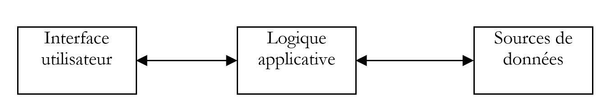
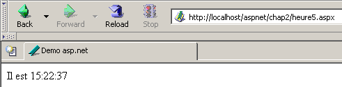

3. Introduction to Web Development ASP.NET
3.1. Introduction
The previous chapter introduced the principles of web development, which are independent of the programming language used. Currently, three technologies dominate the web development market:
- J2EE, which is a Java development platform. Combined with Struts technology, installed on various application servers, the J2EE platform is used primarily in large-scale projects. Because of the language used—Java—a J2EE application can run on major operating systems (Windows, Unix, Linux, Mac OS, ...)
- PHP, which is an interpreted language that is also operating system-independent. Unlike Java, it is not an object-oriented language. However, version PHP5 is expected to introduce objects into the language. Easy to use, PHP is widely used in small and medium-sized projects.
- ASP.NET is a technology that runs only on Windows machines with the .NET platform (XP, 2000, 2003, ...). The development language used can be any .NET-compatible language, such as C#, J#, Delphi, Perl, Python, and more—over a dozen in total.
The previous chapter presented brief examples for each of these three technologies. This document focuses on ASP.NET web development using the VB.NET language. We assume that this language is familiar to the reader. This point is important. Here, we are concerned solely with its use in the context of web development. Let us elaborate on this point by discussing the MVC web development methodology.
A web application that follows the MVC model will be structured as follows:

This type of architecture, known as a three-tier or three-level architecture, is designed to follow the MVC (Model-View-Controller) pattern:
- the user interface is the V (the view)
- the application logic is the C (the controller)
- the data sources are the M (Model)
The user interface is often a web browser, but it could also be a standalone application that sends requests to the web service over the network and formats the results it receives. The application logic consists of scripts that process user requests. The data source is often a database, but it can also be simple flat files, a directory, a remote web service, etc. The developer should maintain a high degree of independence between these three entities so that if one of them changes, the other two do not have to change, or only minimally.
- The application’s business logic will be placed in classes separate from the class that controls the request-response dialogue. Thus, the block [Logique applicative] above could consist of the following elements:

In the [Logique Applicative] block, we can distinguish
- the controller class, which serves as the application’s entry point.
- the [Classes métier] block, which contains the classes required for the application’s logic. These are independent of the client.
- the [Classes d'accès aux données] block, which groups together classes needed to obtain the data required by the servlet, often persistent data (BD, files, WEB service, ...)
- the ASP page block, which constitutes the application views.
In simple cases, the application logic is often reduced to two classes:
- the controller class handling client-server communication: processing the request, generating various responses
- the business class, which receives data to be processed from the controller and provides it with results in return. This business class then manages access to persistent data itself.
The specific nature of web development lies in writing the controller class and the presentation pages. The business and data access classes are standard .NET classes that can be used in a web application as well as in a Windows application or even a console-based application. Writing these classes requires a solid understanding of object-oriented programming. In this document, they will be written in VB.NET, so we assume that you are proficient in this language. With this in mind, there is no need to dwell on the data access code more than necessary. In almost all books on ASP.NET, a chapter is devoted to ADO.NET. The diagram above shows that data access is handled by standard .NET classes that are unaware they are being used in a web context. The controller, which acts as the team leader of the web application, does not need to concern itself with ADO.NET. It simply needs to know which class to request the data it needs from and how to request it. That’s all. Putting ADO.NET code in the controller does not comply with the MVC concept explained above, and we will not do that.
3.2. Tools
This document is intended for students, so we will work with free tools available for download on the internet:
- the .NET platform (compilers, documentation)
- the WebMatrix development environment, which includes the Cassini web server
- various SGBD (MSDE, MySQL)
Readers are encouraged to consult the "Web Tools" appendix, which explains where to find and how to install these various tools. Most of the time, we will only need three tools:
- a text editor for writing web applications.
- a development tool VB.NET for writing VB code when it is extensive. This type of tool generally offers code entry assistance (autocompletion) and reports syntax errors either as you type the code or during compilation.
- A web server to test the written web applications. We will use Cassini in this document. Readers who have the IIS server can replace Cassini with IIS. Both are .NET-compatible. However, Cassini is limited to responding only to local requests (localhost), whereas IIS can respond to requests from external machines.
An excellent commercial environment for developing in VB.NET is Microsoft's Visual Studio.NET. This feature-rich IDE allows you to manage all kinds of documents (VB.NET code, HTML documents, XML, style sheets, etc.). For writing code, it provides the invaluable assistance of automatic code "completion." That said, this tool, which significantly improves developer productivity, has a downside: it locks the developer into a standard development mode that is certainly efficient but not always appropriate.
It is possible to use the Cassini server outside of [WebMatrix], and this is what we will often do. The server executable is located in <WebMatrix>\<version>\WebServer.exe, where <WebMatrix> is the installation directory for [WebMatrix] and <version> is its version number:

Open a Command Prompt window and navigate to the Cassini server folder:
E:\Program Files\Microsoft ASP.NET Web Matrix\v0.6.812>dir
...
29/05/2003 11:00 53 248 WebServer.exe
...
Let’s run [WebServer.exe] without any parameters:

The panel above shows us that the [WebServer/Cassini] application accepts three parameters:
- /port: Web service port number. Can be any value. The default value is 80
- /path: physical path to a folder on the disk
- /vpath: virtual folder associated with the preceding physical folder.
We will place our examples in a file tree with root directory P and folders chap1, chap2, ... for the different chapters of this document. We will associate the virtual path V with this physical folder P. We will also launch Cassini with the following DOS command:
For example, if we want the server’s physical root to be the folder [D:\data\devel\aspnet\poly] and its virtual root to be [aspnet], the DOS command to start the web server will be:
You can save this command as a shortcut. Once launched, Cassini places an icon in the taskbar. Double-clicking it opens a server Start/Stop panel:

The panel displays the three parameters used to launch it. It offers two Start/Stop buttons as well as a test link to the root of its web directory. We click it. A browser opens and the URL [http://localhost/aspnet] page is requested. We obtain the contents of the folder specified in the [Physical Path] field above:

In this example, the requested URL corresponds to a folder rather than a web document, so the server displayed the contents of that folder rather than a specific web document. If there is a file named [default.aspx] in that folder, it will be displayed. For example, let’s create the following file and place it in the root of the Cassini web tree (d:\data\devel\aspnet\poly here):
Now let's request URL [http://localhost/aspnet] using a browser:

We see that in reality it is URL [http://localhost/aspnet/default.aspx] that was displayed. In the remainder of this document, we will indicate how Cassini should be configured using the notation Cassini(path,vpath), where [path] is the name of the root directory of the server’s web tree and [vpath] is the associated virtual path. Recall that with the Cassini server (path,vpath), url corresponds to the physical path [path\XX]. We will place all our documents under a physical root directory that we will call <webroot>. Thus, we can refer to the file <webroot>\chap2\here1.aspx. For each user, this <webroot> directory will be a folder on their personal machine. Here, the screenshots will show that this folder is often [d:\data\devel\aspnet\poly]. However, this will not always be the case, as the tests were performed on different machines.
3.3. First Examples
We will present simple examples of dynamic web pages created with VB.NET. Readers are encouraged to test them to verify that their development environment is properly installed. We will discover that there are several ways to build a ASP.NET page. We will choose one for the rest of our development.
3.3.1. Basic example - variant 1
Required tools: a text editor, the Cassini web server
We’ll revisit the example from the previous chapter. We’ll create the following [heure1.aspx] file:
<html>
<head>
<title>Demo asp.net </title>
</head>
<body>
Il est <% =Date.Now.ToString("T") %>
</body>
</html>
This code is HTML code with a special tag <% ... %>. Inside this tag, you can place VB.NET code. Here, the code
generates a C string representing the current time. The <% ... %> tag is then replaced by this C string. Thus, if C is the string 18:11:01, the HTML line containing the VB.NET code becomes:
Let’s place the previous code in the file [<webroot>\chap2\heure1.aspx]. Let’s start Cassini (<webroot>,/aspnet) and request URL [http://localhost/aspnet/chap2/heure1.aspx] using a browser:

Once we get this result, we know that the development environment is correctly installed. The [heure1.aspx] page has been compiled since it contains VB.NET code. Its compilation produced a DLL file that was stored in a system folder and then executed by the Cassini server.
3.3.2. Basic example - variant 2
Required tools: a text editor, the Cassini web server
The [heure1.aspx] document mixes HTML code and VB.NET code. In such a simple example, this is not a problem. If you need to include more VB.NET code, you will want to further separate the HTML code from the VB code. This can be done by wrapping the VB code inside a <script> tag:
<script runat="server">
' calculation of data to be displayed by HTML code
...
</script>
<html>
....
' display of values calculated by the script part
</html>
The example [heure2.aspx] demonstrates this method:
<script runat="server">
Dim maintenant as String=Date.Now.ToString("T")
</script>
<html>
<head>
<title>Demo asp.net </title>
</head>
<body>
Il est
<% =maintenant %>
</body>
</html>
We place the document [heure2.aspx] in the [<webroot>\chap2\heure2.aspx] directory structure on the Cassini web server (<webroot>,/aspnet) and request the document using a browser:

3.3.3. Basic example - variant 3
Required tools: a text editor, the Cassini web server
We take the process of separating the code VB and the code HTML a step further by placing them in two separate files. The HTML code will be in the [heure3.aspx] document, and the VB code in [heure3.aspx.vb]. The content of [heure3.aspx] will be as follows:
<%@ Page Language="vb" src="heure3.aspx.vb" Inherits="heure3" %>
<html>
<head>
<title>Demo asp.net</title>
</head>
<body>
Il est
<% =maintenant %>
</body>
</html>
There are two fundamental differences:
- the [Page] directive with attributes that are still unknown
- the use of the variable [maintenant] in the code HTML even though it is not initialized anywhere
The [Page] directive is used here to indicate that the VB code that will initialize the page is in another file. The [src] attribute specifies this file. We will see that the code VB belongs to a class named [heure3]. Transparent to the developer, an .aspx file is converted into a class derived from a base class named [Page]. Here, our HTML document must derive from the class that defines and calculates the data it needs to display. In this case, it is the [heure3] class defined in the [heure3.aspx.vb] file. We must also specify this parent-child relationship between the document VB [heure3.aspx.vb] and the document HTML [heure3.aspx]. The [inherits] attribute specifies this relationship. It must indicate the name of the class defined in the file pointed to by the [src] attribute.
Let’s now examine the code VB on the page:
Public Class heure3
Inherits System.Web.UI.Page
' data of the web page to be displayed
Protected maintenant As String
Private Sub Page_Load(ByVal sender As System.Object, ByVal e As System.EventArgs) Handles MyBase.Load
'calculates the web page data
maintenant = Date.Now.ToString("T")
End Sub
End Class
Note the following points:
- The code VB defines a class [heure3] derived from the class [System.Web.UI.Page]. This is always the case, as a web page must always be derived from [System.Web.UI.Page].
- The class declares a protected attribute (protected) [maintenant]. We know that a protected attribute is directly accessible in derived classes. This is what allows the document HTML to access the value of the data [maintenant] in its code.
- The initialization of the [maintenant] attribute is performed in a [Page_Load] procedure. We will see later that an object of type [Page] is notified by the web server of a number of events. The [Load] event occurs when the [Page] object and its components have been created. The handler for this event is designated by the [Handles MyBase.Load] directive
- The name [XX] of the event handler can be anything. Its signature must be the one shown above. We will not explain this one for now.
- The event handler [Page.Load] is often used to calculate the values of the dynamic data that the web page must display.
The documents [heure3.spx] and [heure3.aspx.vb] are placed in [<webroot>\chap2]. Then, using a browser, you request URL and [http://localhost/aspnet/chap2/heure3.aspx] from the web server (<webroot>,/aspnet):

3.3.4. Basic example - variant 4
Required tools: a text editor, the Cassini web server
We use the same example as before, but we consolidate all the code into a single file, [heure4.aspx]:
<script runat="server">
' data of the web page to be displayed
Private maintenant As String
' evt page_load
Private Sub Page_Load(ByVal sender As System.Object, ByVal e As System.EventArgs) Handles MyBase.Load
'calculates the web page data
maintenant = Date.Now.ToString("T")
End Sub
</script>
<html>
<head>
<title>Demo asp.net</title>
</head>
<body>
Il est
<% =maintenant %>
</body>
</html>
We see the same sequence as in Example 2:
This time, the VB code has been structured into procedures. We see the [Page_Load] procedure from the previous example. The goal here is to demonstrate that a standalone .aspx page (not linked to a VB code in a separate file) is implicitly converted into a class derived from [Page]. Therefore, we can use the attributes, methods, and events of this class. This is what is done here, where we use the [Load] event of this class.
The test method is identical to the previous ones:

3.3.5. Basic example - variant 5
Required tools: a text editor, the Cassini web server
As in Example 3, we separate the VB code and the HTML code into two separate files. The VB code is placed in [heure5.aspx.vb]:
Public Class heure5
Inherits System.Web.UI.Page
' data of the web page to be displayed
Protected maintenant As String
Private Sub Page_Load(ByVal sender As System.Object, ByVal e As System.EventArgs) Handles MyBase.Load
'calculates the web page data
maintenant = Date.Now.ToString("T")
End Sub
End Class
The code HTML is placed in [heure5.aspx]:
<%@ Page Inherits="heure5" %>
<html>
<head>
<title>Demo asp.net</title>
</head>
<body>
Il est
<% =maintenant %>
</body>
</html>
This time, the [Page] directive no longer indicates the link between the HTML code and the VB code. The web server can no longer locate the VB code to compile it (the src attribute is missing). It is up to us to perform this compilation. In a DOS window, we therefore compile the VB and [heure5.aspx.vb] classes:
dos>dir
23/03/2004 18:34 133 heure1.aspx
24/03/2004 09:47 232 heure2.aspx
24/03/2004 10:16 183 heure3.aspx
24/03/2004 10:16 332 heure3.aspx.vb
24/03/2004 14:31 440 heure4.aspx
24/03/2004 14:45 332 heure5.aspx.vb
24/03/2004 14:56 148 heure5.aspx
dos>vbc /r:system.dll /r:system.web.dll /t:library /out:heure5.dll heure5.aspx.vb
Compilateur Microsoft (R) Visual Basic .NET version 7.10.3052.4
Above, the compiler's executable [vbc.exe] was located in the PATH directory on the DOS machine. If it hadn’t been, it would have been necessary to specify the full path to [vbc.exe], which is located in the directory tree where SDK.NET was installed. Classes derived from [Page] require resources present in DLL and [system.dll, system.web.dll], hence the reference to them via the compiler’s option /r. The option /t :library is there to indicate that we want to generate a DLL. The option /out specifies the name of the file to be generated, in this case [heure5.dll]. This file contains the [heure5] class required by the [heure5.aspx] web document. However, the web server looks for the DLL files it needs in very specific locations. One of these locations is the [bin] folder located at the root of its directory tree. This root is what we have called <webroot>. For the IIS server, this is generally <drive>:\inetpub\wwwroot where <drive> is the drive (C, D, ...) where IIS was installed. For the Cassini server, this root corresponds to the /path parameter with which you launched it. Remember that this value can be obtained by double-clicking the server icon in the taskbar:

<webroot> corresponds to the [Physical Path] attribute above. We therefore create a <webroot>\bin folder and place [heure5.dll] inside it:

We’re ready. We request URL [http://localhost/aspnet/chap2/heure5.aspx] from the Cassini server (<webroot>,/aspnet):

3.3.6. Basic example - variant 6
Required tools: a text editor, the Cassini web server
We have shown so far that a dynamic web application has two components:
- VB code to calculate the dynamic parts of the page
- HTML code, sometimes including VB code, to display these values on the page. This part represents the response sent to the web client.
Component 1 is called the page controller component, and Part 2 is the presentation component. The presentation component should contain as little VB code as possible, or even none at all. We will see that this is possible. Here, we show an example where there is only a controller and no presentation component. The controller itself generates the response to the client without the help of the presentation component.
The presentation code becomes the following:
We can see that there is no longer any HTML code in it. The response is generated directly in the controller:
Public Class heure6
Inherits System.Web.UI.Page
Private Sub Page_Load(ByVal sender As System.Object, ByVal e As System.EventArgs) Handles MyBase.Load
' we work out the answer
Dim HTML As String
HTML = "<html><head><title>heure6</title></head><body>Il est "
HTML += Date.Now.ToString("T")
HTML += "</body></html>"
' we send it
Response.Write(HTML)
End Sub
End Class
Here, the controller generates the entire response rather than just the dynamic parts of it. It also sends it. It does this using the [Response] property of type [HttpResponse] from the [Page] class. This is an object that represents the server’s response to the client. The [HttpResponse] class has a [Write] method for writing to the HTML stream that will be sent to the client. Here, we place the entire HTML stream to be sent into the [HTML] variable and send this to the client via [Response.Write(HTML)].
We request the url and [http://localhost/aspnet/chap2/heure6.aspx] from the Cassini server (<webroot>,/aspnet):

3.3.7. Conclusion
Subsequently, we will use method 3, which places the VB code and the HTML code of a dynamic web document into two separate files. This method has the advantage of splitting a web page into two components:
- a controller component consisting solely of VB code to calculate the dynamic parts of the page
- a presentation component, which is the response sent to the client. It consists of HTML code, sometimes including VB code for displaying dynamic values. We will always aim to have the minimum amount of VB code in the presentation layer, ideally none at all.
As shown in Method 5, the controller can be compiled independently of the web application. This has the advantage of allowing you to focus solely on the code and to receive a list of all errors with each compilation. Once the controller is compiled, the web application can be tested. Without prior compilation, the web server will handle this, and errors will be reported one by one. This can be considered tedious.
For the examples that follow, the following tools are sufficient:
- a text editor to create the application’s HTML and VB documents when they are simple
- a development tool such as IDE to generate the NET classes, thereby benefiting from the assistance this type of tool provides for writing code. One such tool is, for example, CSharpDevelop (http://www.icsharpcode.net). An example of its use is shown in the appendix [Les outils du développement web].
- the WebMatrix tool to build the application’s presentation pages (see Appendix [Les outils du développement web]).
- the Cassini server
All these tools are free.